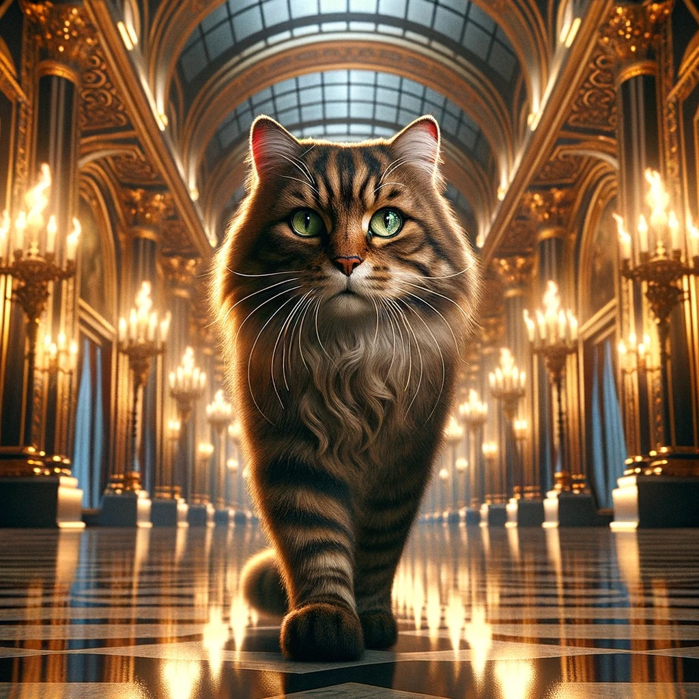
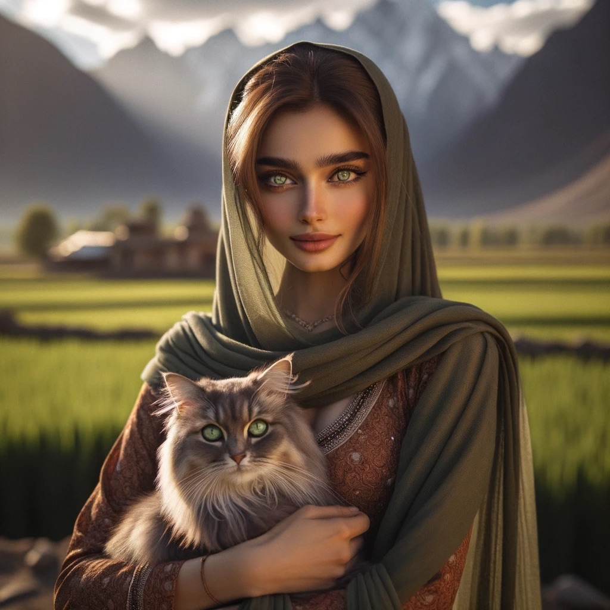
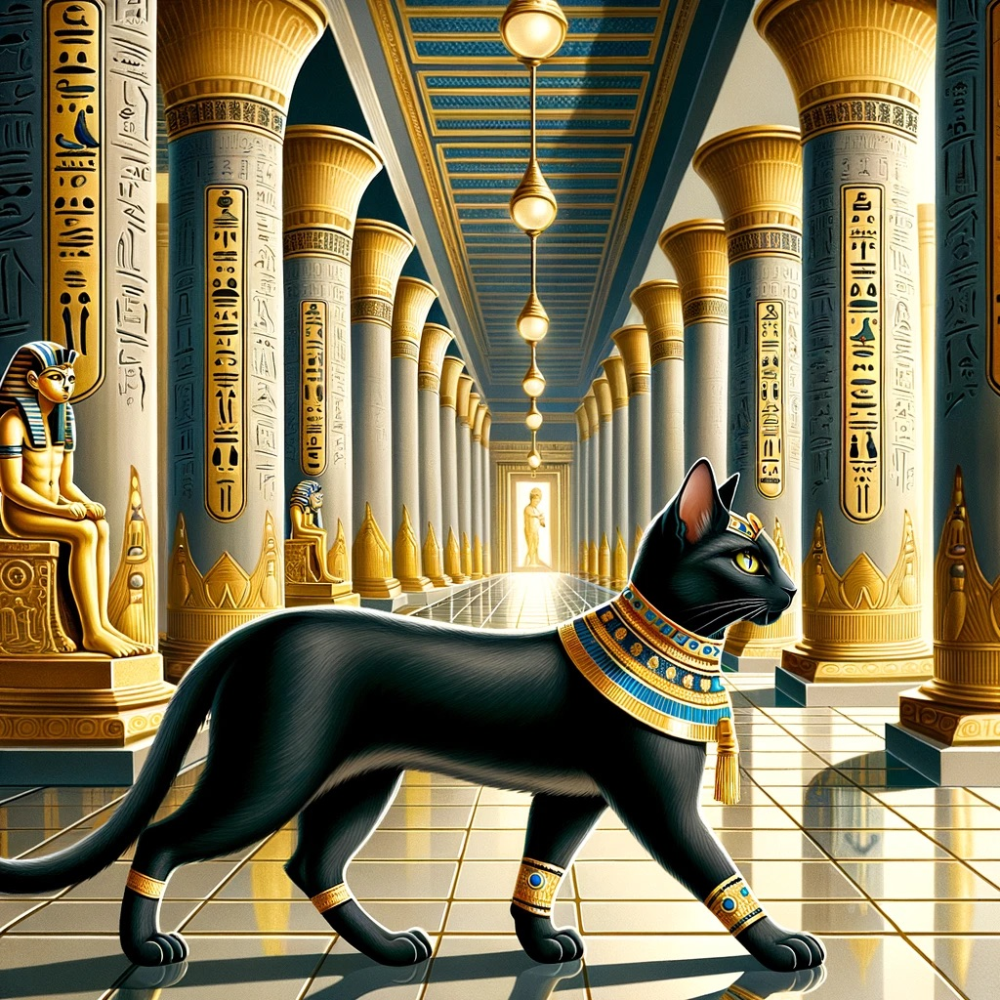
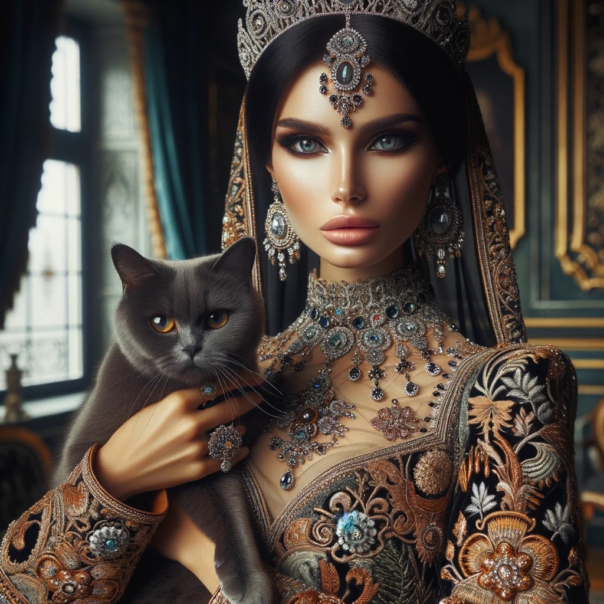
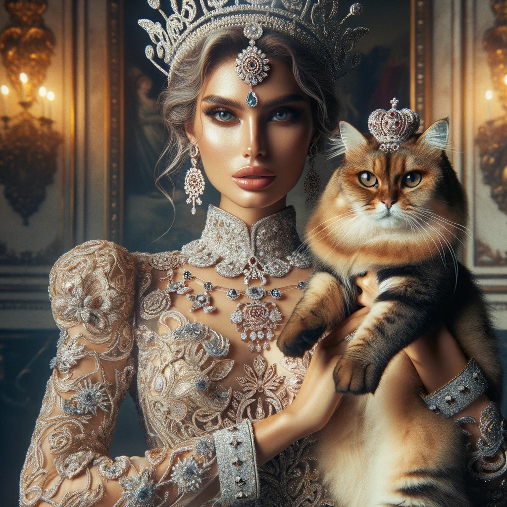

A.I Gallery
Artificially generated images are a captivating blend of technology and creativity. With just lines of code and algorithms, computers can conjure up stunning landscapes, lifelike portraits, and imaginative worlds. They offer endless possibilities for artists, scientists, and storytellers, providing a digital canvas where ideas come to life in a visually spectacular way.
Regal Feline Majesty
This image showcases a majestic cat with a lush mane, walking confidently in a grand hallway.
Monarch of the Manor
This image captures the essence of nobility, featuring a cat perched on an ornate throne, exuding the grandeur of aristocracy.

Pastoral Serenity
An enchanting portrait of companionship, this image paints a tranquil moment between a person and their feline friend amidst a picturesque landscape.
Egyptian Elegance
This tableau presents a majestic cat adorned with the splendor of ancient Egypt, its poised demeanor echoing the timeless grace of the pharaohs.
Royal Rendezvous
In a setting of opulence and tradition, this image portrays a noble figure in regal attire, sharing a moment of quietude with a majestic feline companion.
Enchanting Royalty
Amidst a grand and elegant backdrop, this picture captures a graceful princess in her splendid attire, enjoying a serene moment with her majestic royal cat:
